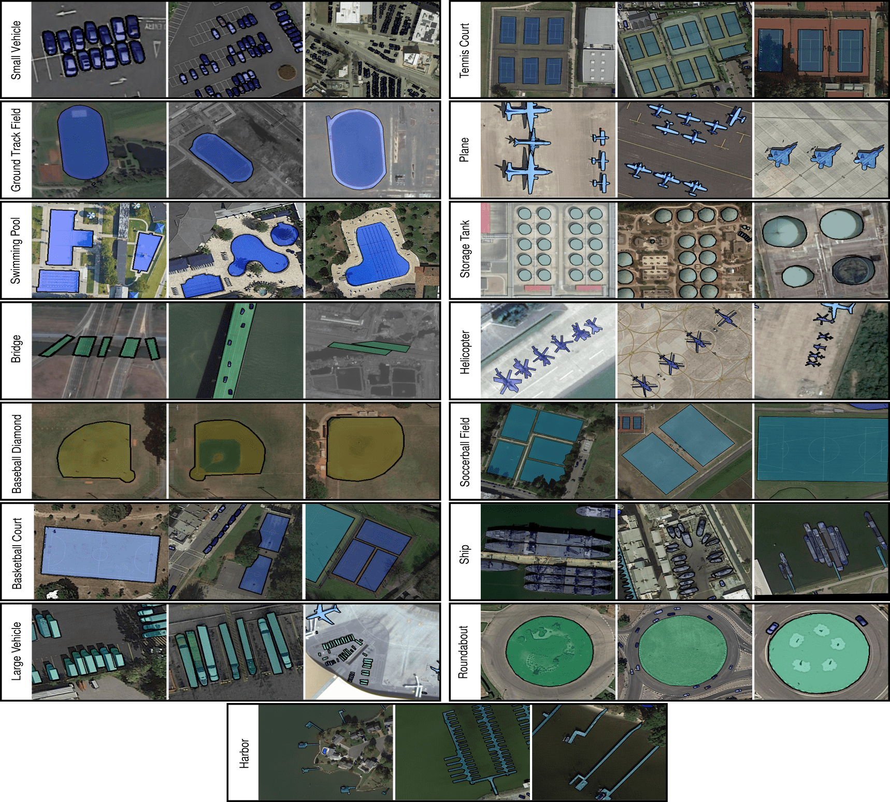

Description
Existing Earth Vision datasets are either suitable for semantic segmentation or object detection.
iSAID is the first benchmark dataset for instance segmentation in aerial images.
This large-scale and densely annotated dataset contains 655,451 object instances for 15 categories
across 2,806 high-resolution images.
The distinctive characteristics of iSAID are the following: (a) large number of images with high
spatial resolution,
(b) fifteen important and commonly occurring categories, (c) large number of instances per category,
(d) large count of labelled instances per image,
which might help in learning contextual information, (e) huge object scale variation, containing
small, medium and large objects, often within the same image,
(f) Imbalanced and uneven distribution of objects with varying orientation within images, depicting
real-life aerial conditions,
(g) several small size objects, with ambiguous appearance, can only be resolved with contextual
reasoning,
(h) precise instance-level annotations carried out by professional annotators, cross-checked and
validated by expert annotators complying with well-defined
guidelines.
For more detail, please refer to our
paper
.
Examples of Annotated Images

Citation
If you make use of the iSAID dataset, please cite our following papers:
@inproceedings{waqas2019isaid,
title={iSAID: A Large-scale Dataset for Instance Segmentation in Aerial Images},
author={Waqas Zamir, Syed and Arora, Aditya and Gupta, Akshita and Khan, Salman and Sun, Guolei and Shahbaz Khan, Fahad and Zhu, Fan and Shao, Ling and Xia, Gui-Song and Bai, Xiang},
booktitle={Proceedings of the IEEE Conference on Computer Vision and Pattern Recognition Workshops},
pages={28--37},
year={2019}
}
@InProceedings{Xia_2018_CVPR,
author = {Xia, Gui-Song and Bai, Xiang and Ding, Jian and Zhu, Zhen and Belongie, Serge and Luo, Jiebo and Datcu, Mihai and Pelillo, Marcello and Zhang, Liangpei},
title = {DOTA: A Large-Scale Dataset for Object Detection in Aerial Images},
booktitle = {The IEEE Conference on Computer Vision and Pattern Recognition (CVPR)},
month = {June},
year = {2018}
}
Contact
If you encounter any problem in using iSAID or have any feedback, please contact
- Syed Waqas Zamir at waqas.zamir@inceptioniai.org,
- Jian Ding at jian.ding@whu.edu.cn.